In this section of the workshop we will continue the analysis of a strain of E.coli. In the previous section we cleaned our data, checked QC metrics, mapped our data and obtained a list of variants and an overview of any missing regions.
Now, we will examine those reads which did not map to the reference genome. We want to know what these sequences represent. Are they novel genes, plasmids or just contamination?
To do this we will extract unmapped reads, evaluate their quality, prepare them for de novo assembly, assemble them using SPAdes, generate assembly statistics and then produce some annotation via Pfam, BLAST and RAST.
Extraction and QC of unmapped reads
Task 1: Extract the unmapped reads
First of all make sure you are in the directory
~/workshop_materials/genomics_tutorial/data/sequencing/ecoli_exeter
(hint: use the cd command).
Then create a directory called unmapped_assembly in which we will do our de novo assembly and analysis.
mkdir unmapped_assembly
cd unmapped_assembly/
Now we will use the bam2fastq program (http://gsl.hudsonalpha.org/information/software/bam2fastq) to extract from the BAM file just those reads which did NOT map to the reference genome. The bam2fastq program has a number of options, most of which are self-explanatory. Type (all on one line):
bam2fastq --no-aligned -o unaligned#.fastq ../remapping_to_reference/E_Coli_CGATGT_L001_filtered.sorted.rmdup.bam
The –no-aligned option means only extract reads which did not align. The -o unaligned# means dump read 1 into a file called unaligned_1.fastq and read 2 into a file unaligned_2.fastq. Below we can see that the program has successfully created the two files.
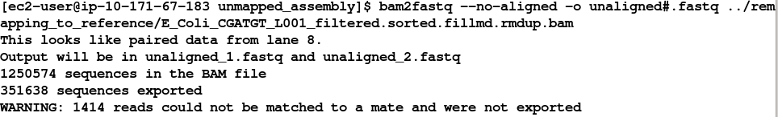
Note that some reads were singletons (i.e. one read mapped to the reference, but the other did not). These will not be included in this analysis.
Task 2: Check the extraction looks correct Check that the number of entries in both fastq files is the same. Also check that the last few entries in the read 1 and read 2 files have the same header (i.e. that they have been correctly paired).
Task 3: Evaluate QC of unmapped reads
Use the fastqc program to look at the statistics and QC for the unaligned_1.fastq and unaligned_2.fastq files.
Do these look reasonably good? Remember, some reads will fail to map to the reference because they are poor quality, so the average scores will be lower than the initial fastqc report we did in the remapping workshop. The aim here is to see if it looks as though there are reads of reasonable quality which did not map.
Assuming these reads look ok, we will proceed with preparing them for de novo assembly.
De-novo assembly
de-novo* is a Latin expression meaning “from the beginning,” “afresh,” “anew,” “beginning again.” when we perform a de novo assembly we try to reconstruct a genome or part of the genome from our reads without making any prior assumptions (in contrast to remapping where we compare out reads to what we think is a close reference sequence).
The advantage is that is that de novo assembly can reveal completely novel results, identify horizontal gene transfer events for example. The disadvantage is that it is difficult to get a good assembly from short reads and it can be prone to misleading results due to contamination and mis-assembly.
Task 4: Learn more about de novo assemblers
To understand more about de-novo assemblers, read the technical note at: https://www.illumina.com/Documents/products/technotes/technote_denovo_assembly_ecoli.pdf
N.B. You will also learn more in the next section so don’t worry if it doesn’t all make sense immediately. You should however understand the idea of the k-mer and broadly how the assembly is built up from them.
Task 5: Generate the assembly.
We will be using an assembler called SPAdes (http://cab.spbu.ru/software/spades/). It generally performs pretty well with a variety of genomes. It can also incorporate longer reads produced from PacBio sequencers that we will use later in the course.
One big advantage is that it is not just a pure assembler - it is a suite of programs that prepare the reads you have, assembles them and then refines the assembly.
SPAdes runs the modules that are required for a particular dataset and it produces the assembly with a minimum of preparation and parameter selection - making it very straightforward to produce a decent assembly. As with everything in bio-informatics you should try to assess the results critically and understand the implications for further analysis.
Let’s start the assembler because it takes a few minutes to run.
spades.py -k 21,33,55,77,99,127 --careful -o spades_assembly -1 unaligned_1.fastq -2 unaligned_2.fastq
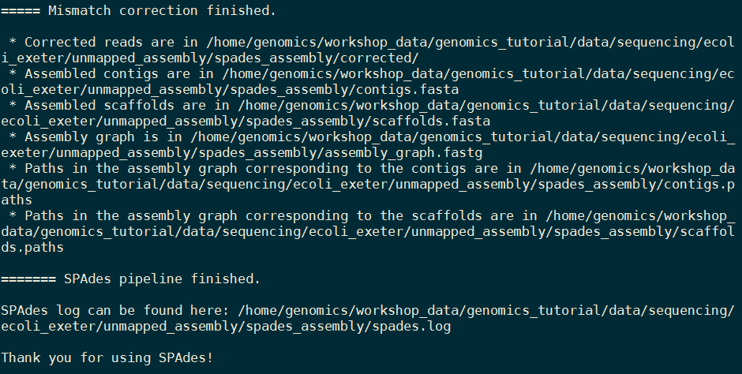
We are telling it to run the SPAdes assembly pipeline with a range of k-mer sizes (-k); specifying –careful tells it to run a mismatch correction algorithm to reduce the number of errors; put the output in the spades_assembly directory and the reads to assemble.
Just because SPAdes does a lot for you does not mean you should not try to understand the process.
Have a read of this: http://thegenomefactory.blogspot.co.uk/2013/08/how-spades-differs-from-velvet.html It is a discussion of how SPAdes differs from Velvet another widely used assembler, it explains the overall process nicely:
Try to understand the steps in the context of the whole picture:
Can you explain why depth of coverage and error correction of reads becomes more important as k-mer length increases?
When the assembly is complete: Change to the spades_assembly directory (use cd) and look at the output.
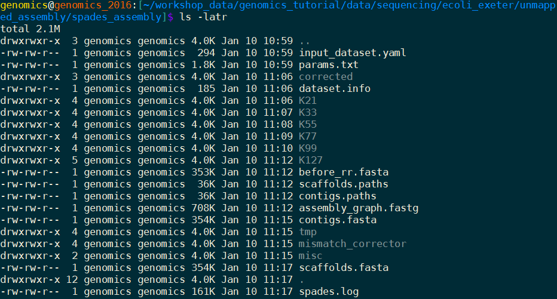
Let’s take a look at some of the more important content.
Task 6: Assessment of the assembly
We will use QUAST (http://quast.sourceforge.net/quast) to generate some statistics on the assembly (in the spades_assembly directory)
cd spades_assembly
quast.py --output-dir quast contigs.fasta
This will create a directory called quast and create some statistics on the assembly you produced.
cat quast/report.txt
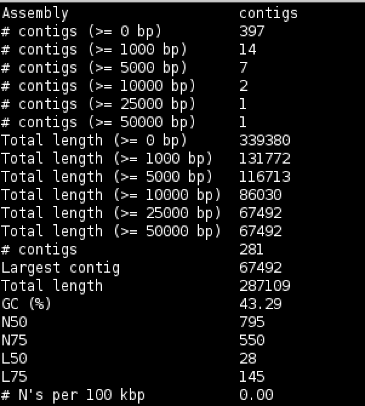
Try to interpret the information in the light of what we were trying to do. Because we are assembling unaligned reads we are not expecting a whole chromosome to pop out. We are expecting bits of our strain that does not exist in the reference we aligned against; possibly some contamination; various small contigs made up of reads that didn’t quite align to our reference.
The N50 and L50 measures are very important in a normal assembly and we will visit them later, they are not really relevant to this assembly.
You will notice that we have 1 contig 30-60kb long - what do you think this might be? And 12 other contigs longer than 1kb. We should find out what this is.
Now that we have assembled the reads and have a feel for how much (or in this case, how little) data we have, we can set about analysing it. By analysing, we mean identifying which genes are present, which organism they are from and whether they form part of the main chromosome or are an independent unit (e.g. plasmid).
We are going to take a 3-prong approach. The first will simply search the nucleotide sequences of the contigs against the NCBI non-redundant database. This will enable us to identify the species to which a given contig matches best (or most closely). The second will call open reading frames within the contigs and search those against the Swissprot database of manually curated (i.e. high quality) annotated protein sequences. Finally, we will search the open reading frames against the Pfam database of protein families (http://pfam.xfam.org/).
Why not just search the NCBI blast database? Well, remember nearly all of our biological knowledge is based on homology - if two proteins are similar they probably share an evolutionary history and may thus share functional characteristics. Metrics to define whether two sequences are homologous are notoriously difficult to define accurately. If two sequences share 90% sequence identity over their length, you can be pretty sure they are homologous. If they share 2% they probably aren’t. But what if they share 30%? This is the notorious twilight zone of 20-30% sequence identity where it is very difficult to judge whether two proteins are homologous based on sequence alone.
To help overcome this searching more subtle signatures may help - this is where Pfam comes in. Pfam is a database which contains protein families identified by particular signatures or patterns in their protein sequence. These signatures are modeled by Hidden Markov Models (HMMs) and used to search query sequences. These can provide a high level annotation where BLAST might otherwise fail. It also has the advantage of being much faster than BLAST.
Task 7: Search contigs against NCBI non-redundant database
Firstly we can filter out low coverage and very short contigs using a perl script:
filter_low_coverage_contigs.pl < contigs.fasta > contigs.goodcov.fasta
The following command executes a nucleotide BLAST search (blastn) of the sequences in the contigs.fa file against the non-redundant database. As this takes a long time to run the results have been precomputed and are available in
~/workshop_materials/genomics_tutorial/data/sequencing/ecoli_exeter/blast_precompute/unmapped_reads/
blastn -db ~/workshop_materials/genomics_tutorial/db/blast/nt -query contigs.goodcov.fasta -evalue 1e-06 -num_threads 8 -show_gis -num_alignments 10 -num_descriptions 10 -out contigs.fasta.blastn
There are a lot of options in this command, let’s go through them
evalue apply an e-value (expectation value) (http://www.ncbi.nlm.nih.gov/BLAST/tutorial/Altschul-1.html) cutoff of 1e-06 to limit ourselves to statistically significant hits (i.e. in this case 1 in 1 million likelihood of a hit to a database of this size by a sequence of this length).
There is lots of information on running blast from the command line at http://www.ncbi.nlm.nih.gov/books/NBK1763/
N.B. GI (GeneInfo Identifiers) are being phased out by NCBI so future versions of Blast and NCBI databases will not support the -show_gis option and may break some down-stream tools such as KronaTools and other databases.
Open the results file
pluma contigs.fasta.blastn
BLASTN 2.2.31+
Reference: Zheng Zhang, Scott Schwartz, Lukas Wagner, and Webb
Miller (2000), "A greedy algorithm for aligning DNA sequences", J
Comput Biol 2000; 7(1-2):203-14.
Database: Nucleotide collection (nt)
29,442,065 sequences; 84,823,117,434 total letters
Query= NODE_1_length_67364_cov_602.091
Length=67364
Score E
Sequences producing significant alignments: (Bits) Value
gi|664682453|gb|CP008801.1| Escherichia coli KLY, complete genome 86309 0.0
gi|8918823|dbj|AP001918.1| Escherichia coli K-12 plasmid F DNA, ... 86272 0.0
gi|619497957|gb|KJ170699.1| Escherichia coli strain K-12 plasmid... 65330 0.0
gi|665821556|gb|KJ484626.1| Escherichia coli plasmid pH2332-166,... 65302 0.0
gi|665821958|gb|KJ484628.1| Escherichia coli plasmid pH2291-144,... 65213 0.0
gi|28629230|gb|AF550679.1| Escherichia coli plasmid p1658/97, co... 64591 0.0
gi|4874241|gb|U01159.2| Escherichia coli F sex factor transfer r... 61474 0.0
gi|665822931|gb|KJ484636.1| Escherichia coli plasmid pC59-153, c... 41227 0.0
gi|301130432|gb|CP002090.1| Salmonella enterica subsp. enterica ... 41026 0.0
gi|301130304|gb|CP002089.1| Salmonella enterica subsp. enterica ... 41026 0.0
. . .
SPAdes names the contigs by increasing size, so ‘NODE_1’ is the longest contig.
There are a number of good hits; notice from the contig header line that the average coverage is >500 and the coverage of our genome was around 50 - does this give you a clue to what it is?
Task 8: Obtain open reading frames
The first task is to call open reading frames within the contigs. These are designated by canonical start and stop codons and are usually identified by searching for regions free of stop codons. We will use the EMBOSS package program getorf to call these.
We will use codon table 11 which defines the bacterial codon usage table (http://www.ncbi.nlm.nih.gov/Taxonomy/Utils/wprintgc.cgi) and state that the sequences we are dealing with are not circular (only the 67k contig is long enough!). We will also restrict the ORFs to just those sequences longer than 300 nucleotides (i.e. 100 amino acids). We will store the results in file contigs.orf.fa.
getorf -table 11 -circular N -minsize 300 -sequence contigs.goodcov.fasta -outseq contigs.orf.fasta
If we look at the output file we can see that it is a FASTA formatted file containing the name of the contig on which the ORF occurs, followed by an underscore and a number (e.g. _1) to indicate the number of the ORF on that contig. The numbers in square brackets indicate the start and end position of the ORF on the contig (i.e. in nucleotide space). So the first ORF occurs on NODE 9 and is between position 934 and 1494. The third ORF occurs between positions 2400 and 2047 on the reverse strand. This is a relatively short peptide sequence and is unlikely to be a genuine peptide.
Also note that many ORFs do not start with a Methionine. This is because by default the getorf program calls ORFs between stop codons rather than start and stop codons. Primarily this is to avoid spurious ORFs due to Met residues within a protein sequence and to ensure untranslated regions are captured.
>NODE_9_length_3631_cov_29.6618_ID_17_1 [934 - 1494] \
TERFEVSEINSQALREAAEQAMHDDWGFDADLFHELVTPSIVLELLDERERNQQYIKRRD
QENEDIALTVGKLRVELETAKSKLNEQREYYEGVISDGSKRIAKLESNEVREDGNQFLVV
RHPGKTPVIKHCTGDLEEFLRQLIEQDPLVTIDIITHRYYGVGGQWVQDAGEYLHMMSDA
GIRIKGE
>NODE_9_length_3631_cov_29.6618_ID_17_2 [2450 - 3529] \
RGSEMGRRRSHERRDLPPNLYIRNNGYYCYRDPRTGKEFGLGRDRRIAITEAIQANIELF
SGHKHKPLTARINSDNSVTLHSWLDRYEKILASRGIKQKTLINYMSKIKAIRRGLPDAPL
EDITTKEIAAMLNGYIDEGKAASAKLIRSTLSDAFREAIAEGHITTNHVAATRAAKSEVR
RSRLTADEYLKIYQAAESSPCWLRLAMELAVVTGQRVGDLCEMKWSDIVDGYLYVEQSKT
GVKIAIPTALHIDALGISMKETLDKCKEILGGETIIASTRREPLSSGTVSRYFMRARKAS
GLSFEGDPPTFHELRSLSARLYEKQISDKFAQHLLGHKSDTMASQYRDDRGREWDKIEIK
>NODE_9_length_3631_cov_29.6618_ID_17_3 [2400 - 2047] (REVERSE
SENSE)
FVEQILSSILNRRWEYPAFPNPSTNCFKASWTSLACVPLLKCQVHRKVSAITRKKKPPSG
GLVFFQFFNSNIGYVCMCYLRPYHPVVVAVVDVLRFDNSVEWLSIPFSCDSEVHLSSP
Task 9: Search open reading frames against NCBI non-redundant database
The first thing we can do with these open reading frames is to search them against the NCBI non-redundant database of protein sequences to see what they may match.
First reduce the number of orfs so that we have a manageable number - this small perl program selects 10% of the orfs.
reduce_fasta_10x.pl < contigs.orf.fasta > contigs.orf.small.fasta
Then you would type (all on one line). HOWEVER this could take a while, therefore the results have been precomputed in ~/workshop_materials/genomics_tutorial/data/sequencing/ecoli_exeter/blast_precompute/unmapped_reads/
blastp -db ~/workshop_materials/genomics_tutorial/db/blast/nr -query contigs.orf.small.fasta -evalue 1e-06 -num_threads 2 -show_gis -num_alignments 10 -num_descriptions 10 -out contigs.orf.blastp
Task 10: Review the BLAST format
Open the results file with pluma and search for plasmid in the text. You should find a number of hits to plasmid related proteins - one example is below - can you find any others? (Remember we only checked 10% of the orfs we found). This evidence is not conclusive, but combined with the high coverage over, it is starting to look like this contig is a plasmid.
Query= NODE_1_length_67364_cov_602.091_17 [9087 - 9569]
Length=161
Score E
Sequences producing significant alignments: (Bits) Value
gi|553349257|gb|ESA76469.1| Protein PsiB 322 5e-110
gi|503044320|ref|WP_013279296.1| plasmid SOS inhibition protein B 320 2e-109
gi|324006232|gb|EGB75451.1| plasmid SOS inhibition protein (PsiB) 310 2e-105
gi|300355538|gb|EFJ71408.1| plasmid SOS inhibition protein (PsiB) 308 5e-105
gi|324010272|gb|EGB79491.1| plasmid SOS inhibition protein (PsiB) 305 2e-103
gi|505582716|ref|WP_015675404.1| recombinase 300 1e-101
gi|446768672|ref|WP_000845928.1| recombinase 299 2e-101
gi|301073353|gb|EFK88159.1| Protein PsiB 300 2e-101
gi|446768671|ref|WP_000845927.1| recombinase 297 1e-100
gi|446610348|ref|WP_000687694.1| recombinase 297 1e-100
Task 11: Check that the contigs do not appear in the reference sequence
In theory, the unmapped reads used to generate the contigs should not assemble into something which will map against the genome. However, it is always possible (especially with more complex genomes), that this might happen. To double-check move back to the folder containing the contigs.goodcov.fasta:
blastn -subject ~/workshop_materials/genomics_tutorial/data/reference/U00096/U00096.fna -query contigs.goodcov.fasta | more
Here we use the BLAST+ package in a different mode to compare two sequences against each other. Unlike the previous examples where we have searched against a database of sequences, here we are doing a simple search of the contigs against the reference genome we are using. Scroll down a little…
Query= NODE_18_length_917_cov_10.7608
Length=917
Subject= U00096.3
Length=4641652
Score = 193 bits (104), Expect = 3e-49
Identities = 186/227 (82%), Gaps = 0/227 (0%)
Strand=Plus/Minus
Query 624 GCCTTTGGCGTTGCAGCAAGCGTTTCAGACGTGCTGTTGGTTGCACTGCTGAGCTGCACT 683
|||||||||||||| || |||||||||||||| |||||||| |||||||||||||| |||
Sbjct 1430511 GCCTTTGGCGTTGCCGCCAGCGTTTCAGACGTACTGTTGGTCGCACTGCTGAGCTGTACT 1430452
Query 684 ATCCCCTTTCTCGTTGTGTCCGCATCCTCAAGCGCGACAGCTGAAGCTATATCTTCTGCA 743
||||||||| |||| || |||||||||||||| || || || || ||||| |||||
Sbjct 1430451 ATCCCCTTTTTCGTCGTACTTGCATCCTCAAGCGCCACGGCGGATGCAATATCCTCTGCC 1430392
You can see that some of the contigs that have been assembled hit the reference sequence. In the record above the evalue is 3e-49 which is massively significant; however, the evalue is calculated as the chance of a hit this close against a random sequence of the same size. Since our subject sequence is now very small and we know it is related to our strain it is not surprising that there are some hits. We are concerned about whole contigs that map closely to the reference genome.
Task 12: Run open reading frames through pfam_scan
Pfam is a database of protein families. They are grouped together using a number of criteria based on their function. For more information read http://en.wikipedia.org/wiki/Pfam.
Pfam is grouped into several databases depending on the level of curation. Pfam-A is high-quality manual curation and consists of around 12,500 families. Pfam-B is full of automated predictions which may be informative but should not be relied upon without additional evidence. Pfam will also search for signatures of active-sites if you specify the correct flag.
Here we want to search the Pfam database of Hidden Markov Models to see which protein families are contained within this contig. You’ll notice that this runs considerably faster than BLAST. Here we search using the contigs.orf.fa file against the Pfam databases ~/genomics_tutorial/db/pfam/ and output the results to contigs.orf.pfam. We’ll use 2 CPU cores for the search and state that we want to search PfamB entries as well as active site residues.
This step might take about 30 minutes. So you can get a coffee in the meantime.
pfam_scan.pl -fasta contigs.orf.fasta -dir ~/workshop_materials/genomics_tutorial/db/pfam/ -outfile contigs.orf.pfam -cpu 2 -pfamB -as
View the output using pluma:
Search for NODE_9 (for example).
NODE_9_length_3631_cov_31.6458_1 7 106 7 106 PF13935.1 Ead_Ea22 Family 1 139 139 103.8 9e-30 1 No_clan
NODE_9_length_3631_cov_31.6458_1 77 113 77 126 PB009353 Pfam-B_9353 Pfam-B 1 37 82 53.4 2.8e-14 NA NA
NODE_9_length_3631_cov_31.6458_2 5 74 5 75 PF09003.5 Phage_integ_N Domain 1 75 76 89.5 8e-26 1 CL0081
NODE_9_length_3631_cov_31.6458_2 85 162 84 162 PF02899.12 Phage_int_SAM_1 Domain 2 84 84 24.1 3e-05 1 CL0469
NODE_9_length_3631_cov_31.6458_2 183 349 182 353 PF00589.17 Phage_integrase Family 2 169 173 115.1 2.6e-33 1 CL0382 predicted_active_site[239,312,216,346,337,315]
NODE_9_length_3631_cov_31.6458_3 53 115 48 117 PB009641 Pfam-B_9641 Pfam-B 50 112 168 23.3 6.7e-05 NA NA
The 8th column shows the type of entry that was hit in the pfam database.
Go to http://pfam.xfam.org/ and enter the Pfam domain
in the search box.
Let’s take a look at Pfam domain Phage_integ_N
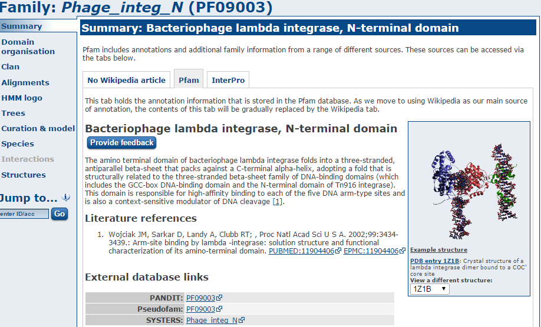
There are a lot of hits to phage domains and domains that manipulate DNA. You might expect this as these sequences have presumably been incorporated into our strain since it diverged from the reference.
Also look at domains (the most specific type of hit) from our large contig NODE_1_….. is there any evidence for it being a plasmid?
The Pfam-B matches do not tell you much that is useful.
Examine one or two more domains from your results file - is there anything interesting?
Analysing the results in RAST
By now you should be able to see that analysing results for de novo assembled reads of any sort can be difficult and time-consuming. Bear in mind that we have only been faced with a single contig of 3kb. Quite often you may find yourself dealing with hundreds, if not thousands of contigs. Some will be a few 100kb long. Others may only be 200-300bp. How should we go about analysing these in a more efficient manner? There are a number of options here.
For eukaryotes I would suggest looking at MAKER (http://www.yandell-lab.org/software/maker.html).
For prokaryotes the situation is somewhat easier and we can use a web-based service known as RAST. This is not the only service (Xbase is another), but it is one of the most commonly used.
RAST is a website where you upload the results of your de novo assembly and RAST will attempt to provide annotation in commonly used GFF and Genbank formats. This can be used to load up the annotation in Artemis or Apollo. Alternatively RAST has its own in-built viewer.
Task 13 (Optional) Log in to RAST
Within your instance, go to http://rast.nmpdr.org/ Log-in with the details RAST provided to you before you started this series of workshops. If you do not have one, you may need to wait several days for your login to be issued by RAST. Please skip ahead and come back to this section.
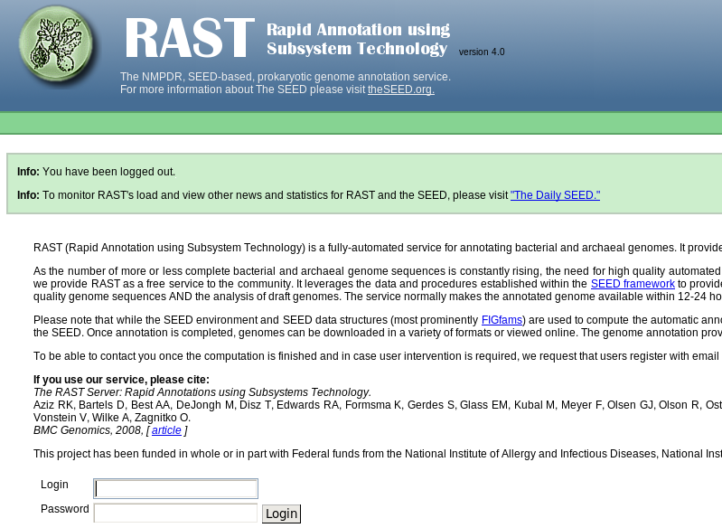
Task 14 (Optional) Upload the assembled contigs and annotate using RAST Click on Your jobs->Upload New Job
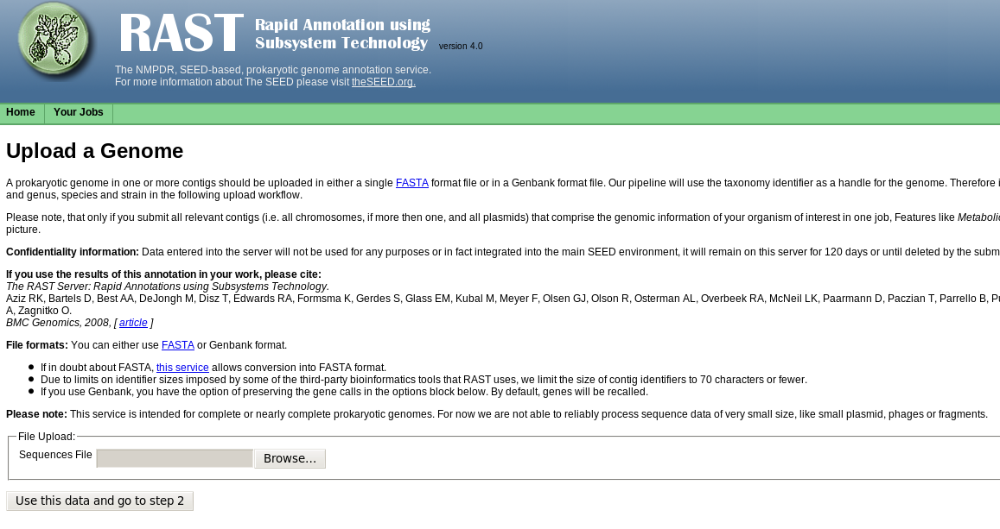
Upload the contigs.fasta file obtained by the de novo assembly of unmapped reads. Click on ‘Use this data’ and go to step 2.
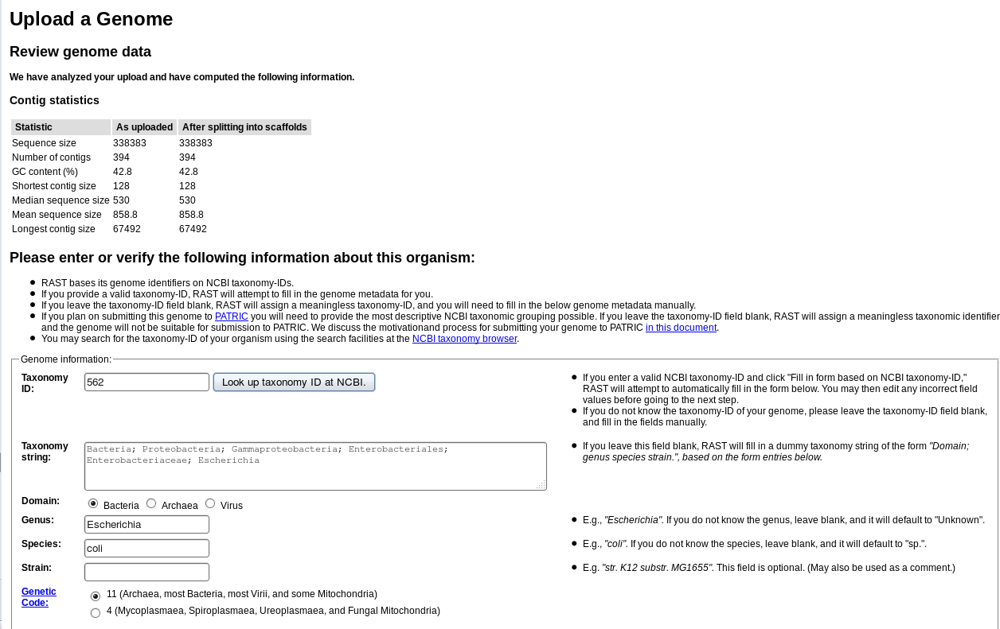
We know this is an E.coli genome so we can enter 562 as the Taxonomy ID and click on ‘Fill in form based on NCBI taxonomy-ID’. If you’re dealing with a different organism, be sure to change this number. RAST will automatically split any scaffolds (i.e. contigs with bits missing in the middle - denoted by Ns). Then click ‘Use this data and go to step 3’.
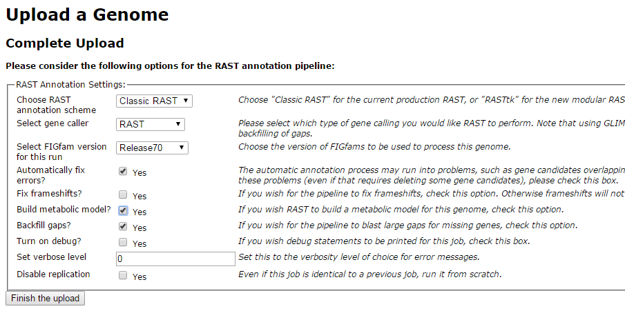
Replicate the settings above and click on ‘Finish the upload’.
Your job may take several hours to run. In the meantime, proceed to the next workshop and come back to this later.
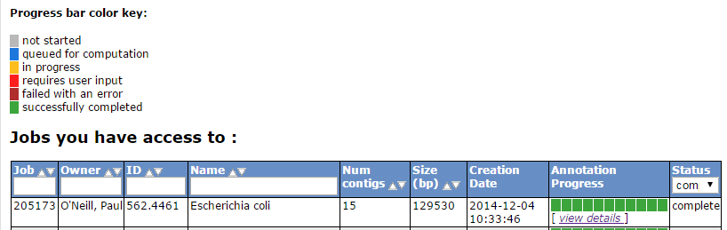
Once complete, RAST should email you a message. You can then view the results or download them in standardized formats (e.g. GFF3, Genbank, EMBL etc).
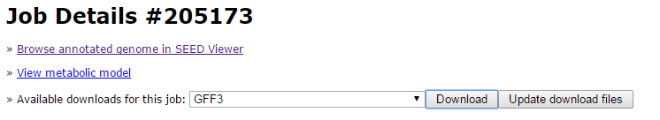
On the start page click on view details for your annotation
You will get a summary of the sequence you uploaded and you have the ability to download the annotations to your computer.
Download the GFF3 annotation and open it in a text editor
##gff-version 3 NODE_10_length_3324_cov_22.7003_ID_19 FIG CDS 249 1163 . 0 ID=fig|562.4461.peg.1;Name=FIG010773: NAD-dependent epimerase/dehydratase
note: your output may be different. Scan down the list of annotations do any themes stand out?
Click on ‘Browse annotated genome in SEED viewer’
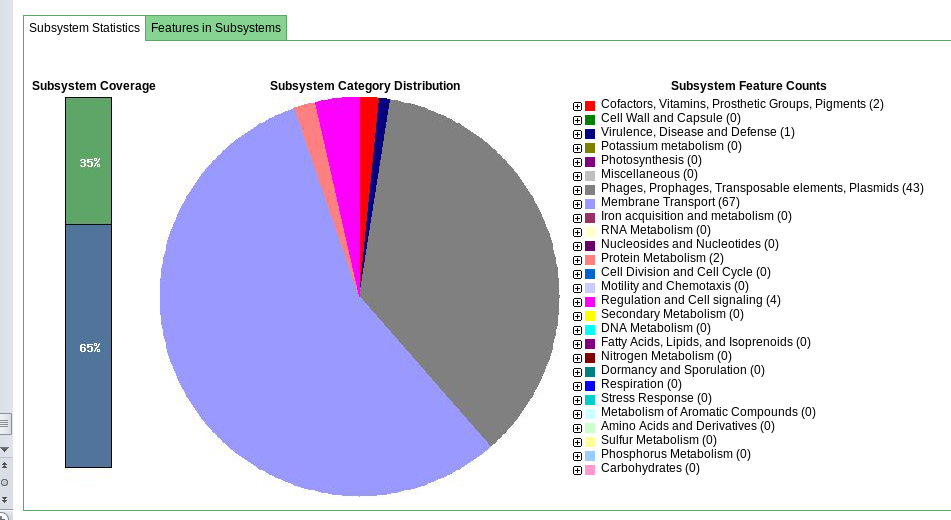
This gives you a hierarchical view of the subsystems.
Browse the rest of the RAST server and get a feel for the possibilities the platform may offer you.
When you’re ready, move on to (or back to) the de novo assembly part of the workshop.